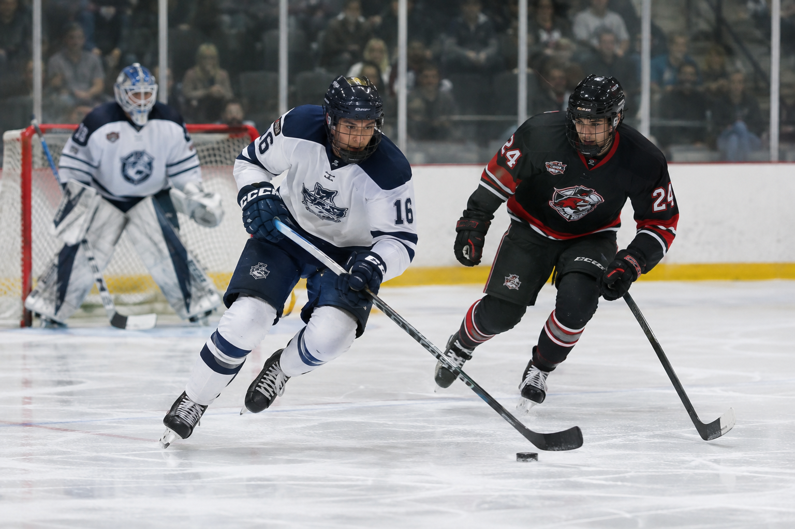
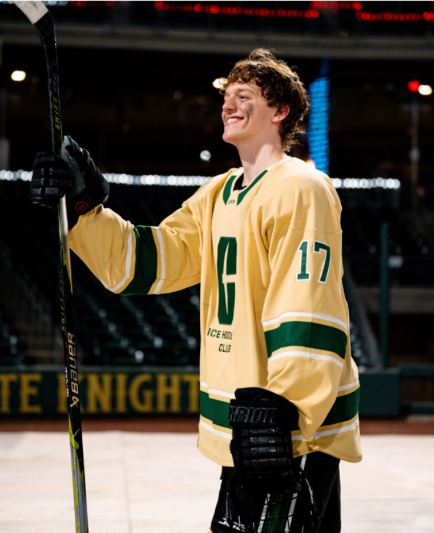
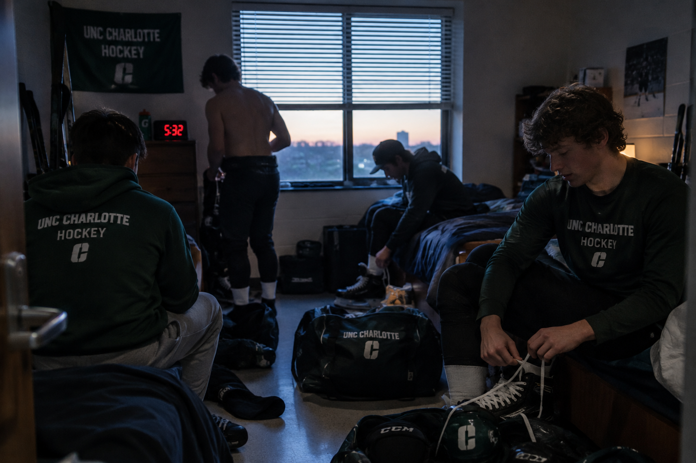
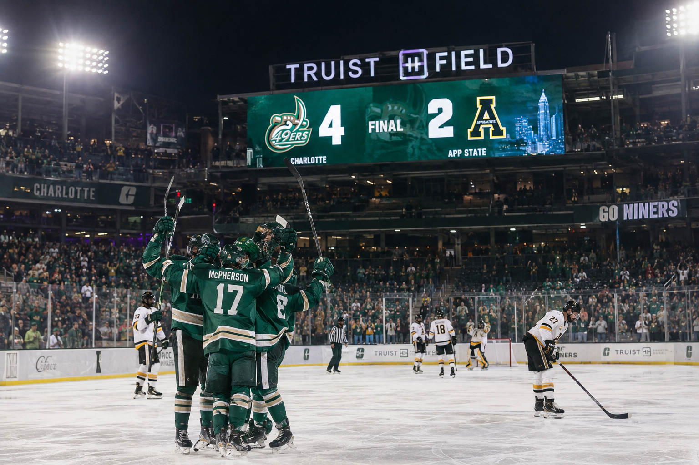
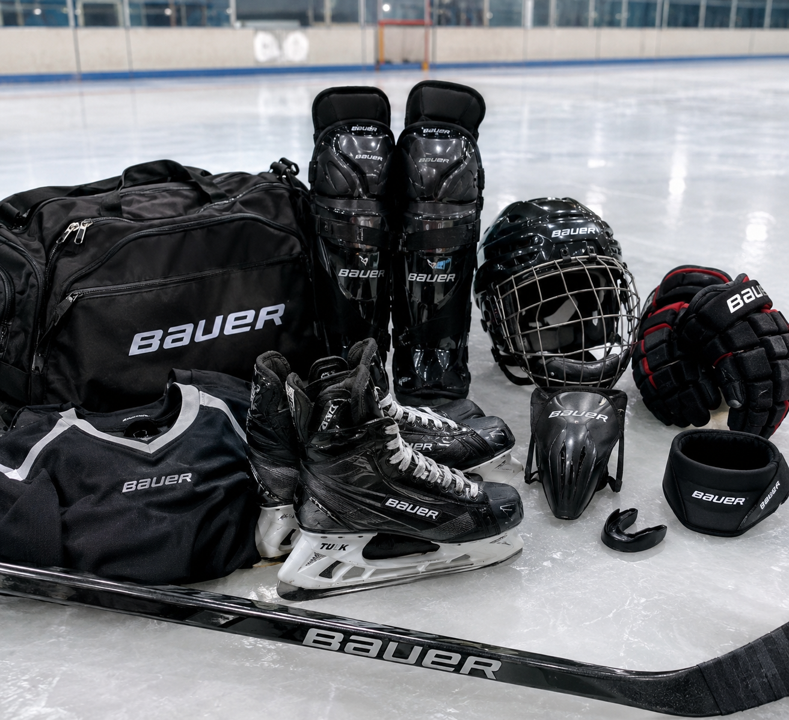
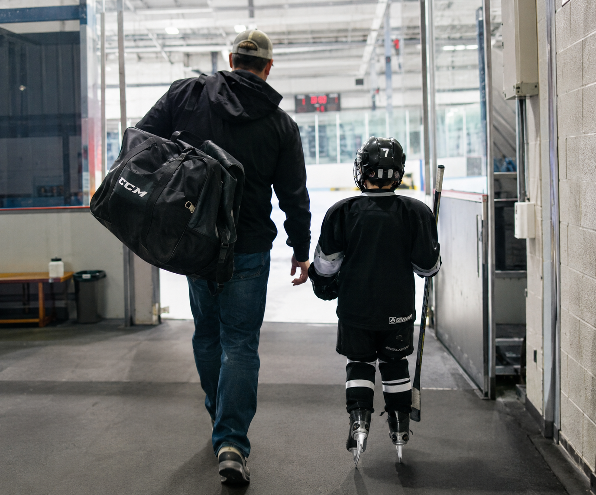

When Is Hockey Played?
Hockey is typically played during the fall, winter, and early spring months.
Hockey is a fast-paced game played on ice. Players skate across the rink and attempt to put a rubber disk, called a puck, into the opposing team's net.

AI prompt used: "Generate a realistic picture of hockey being played on ice."
| Position | Role |
|---|---|
| Goalie | Protects the net and prevents the puck from crossing the goal line using specialized pads and gloves. |
| Defenseman | Defends the defensive zone, clears rebounds, and starts offensive breakouts with transition passes. |
| Left Wing | Generates offensive pressure along the left boards, battles in the corners, and covers opposing defensemen. |
| Center | Takes faceoffs, quarterbacks offensive rushes, and covers both ends of the ice. |
| Right Wing | Carries the puck down the right wing, forechecks opposing defenders, and drives scoring opportunities. |
I have personally played competitive ice hockey since I was five years old. Today, I continue my passion by playing collegiate club hockey for the Charlotte 49ers at UNC Charlotte.

No AI prompt was used for this photo; it is an original personal photograph.
While hockey can be played year-round at indoor arenas, organized leagues follow specific calendars ranging from winter games to off-season conditioning.
Hockey is typically played during the fall, winter, and early spring months.
Recreational and collegiate hockey schedules often include two to three practices per week, one or two games a week, and occasional tournaments or playoffs.
Games typically take place on Friday, Saturday, or Sunday nights. Tournaments may include different time slots.
| Event | Time |
|---|---|
| Practice | 5:30 a.m. – 7:00 a.m. Tuesdays |
| Practice | 5:30 a.m. – 7:00 a.m. Thursdays |
| Games | Friday, Saturday, or Sunday at varying times |

AI prompt used: "Create a photorealistic picture of UNCC hockey club waking up early in the morning for hockey."
Hockey is especially popular in northern states of the United States, Canada, and parts of Europe. The sport has a strong identity around the world.
Minnesota is known as the State of Hockey and has produced many NHL and NCAA Division I hockey players.
Canada has a long hockey tradition, including outdoor hockey rinks built on ponds and lakes.
Russia has an established hockey culture and a major professional league, the KHL.
| Venue Name | Location | Significance |
|---|---|---|
| Extreme Ice Center | Indian Trail, NC | A regional rink used for hockey programs and games. |
| Truist Field | Charlotte, NC | Hosts Charlotte 49ers football and has been used for special outdoor hockey events. |
| Lenovo Center | Raleigh, NC | The home arena of the NHL's Carolina Hurricanes. |

AI prompt used: "Create a photorealistic image of Truist Field with an ice surface, showing the Charlotte 49ers winning a hockey game against App State."
Starting hockey is a lengthy and unusual process compared to most sports. It requires lots of gear and multiple practices in order to be coordinated enough to play.
| Equipment | Purpose |
|---|---|
| Helmet | Protects the head and face from pucks, sticks, and falls. |
| Hockey Stick | Used for stickhandling, passing, and shooting the puck. |
| Protective Pads | Shin, elbow, shoulder, and other pads help protect against impacts and falls. |
| Hockey Skates | Provide ankle support and steel blades for moving on the ice. |
| Gloves | Protect the hands and help players grip their sticks. |
| Hockey Pants | Provide protection for the hips and upper legs. |

AI prompt used: "Make a photorealistic picture of hockey gear. Detail all the important pieces of equipment."
After getting the necessary equipment, work through these three stages to move from learning basic skating to playing organized hockey.
Start by learning the basics of skating during public sessions. Practice balance, stopping, turning, and moving comfortably on the ice.
Once you can skate confidently, attend stick-and-puck sessions to practice stickhandling, passing, and shooting alongside other players.
Join a recreational league to use your skills in games, learn teamwork, and gain experience playing with a team.

AI prompt used: "Create a photorealistic image of a father walking with his child into a hockey rink carrying his hockey bag."
I used AI in order to do portions of this assignment. I generated images and leveraged code for JS I was not familiar with. AI was an incredibly useful tool for this assignment.
“Create a six-slide JavaScript slideshow. Give me the structure but do not write any text."
| Page | Prompt |
|---|---|
| What Section Image | "Generate a realistic picture of hockey being played on ice." |
| When Section Image | "Create a photorealistic picture of UNCC hockey club waking up early in the morning for hockey." |
| Where Section Image | "Create a photorealistic image of Truist Field with an ice surface, showing the Charlotte 49ers winning a hockey game against App State." |
| How Section Image | "Make a photorealistic picture of hockey gear. Detail all the important pieces of equipment." |
| Why Section Image | "Create a photorealistic image of a father walking with his child into a hockey rink carrying his hockey bag." |